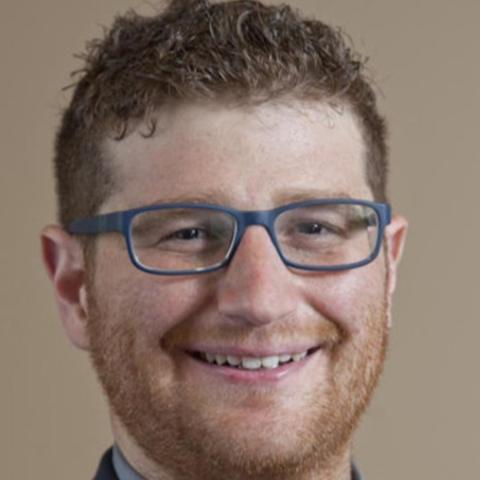
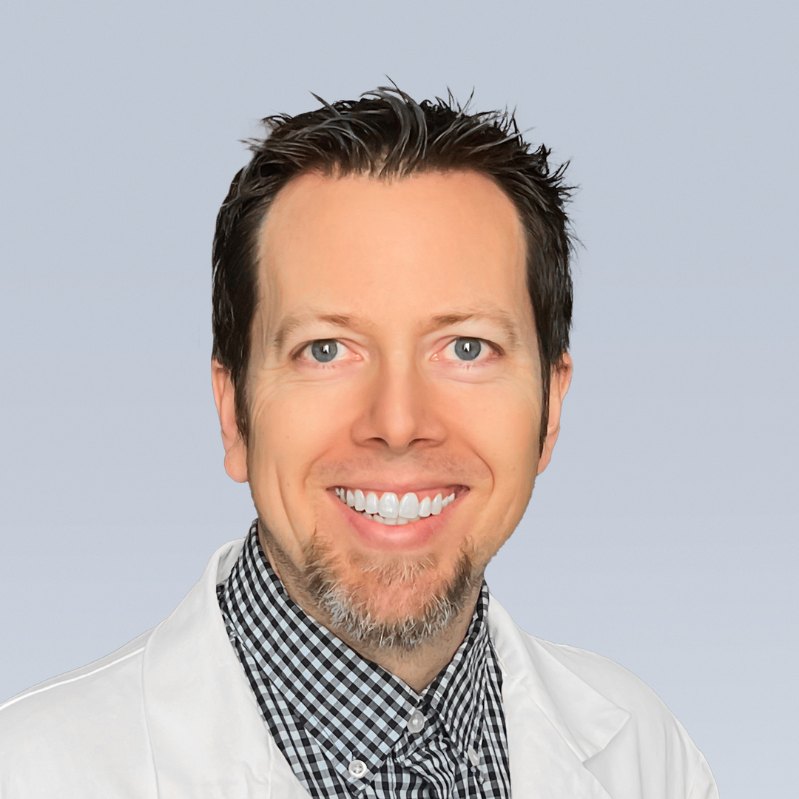
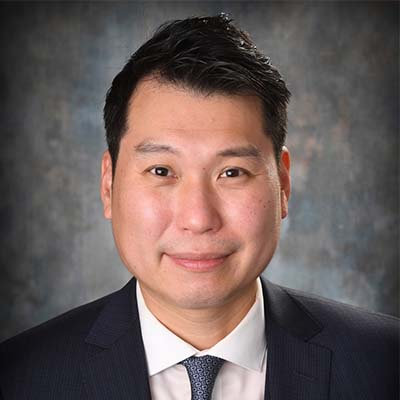
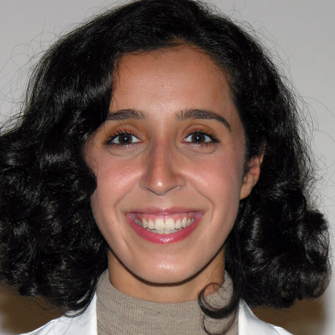
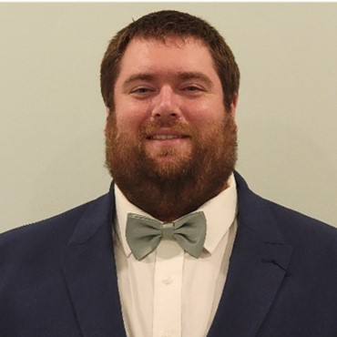
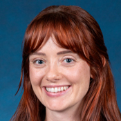
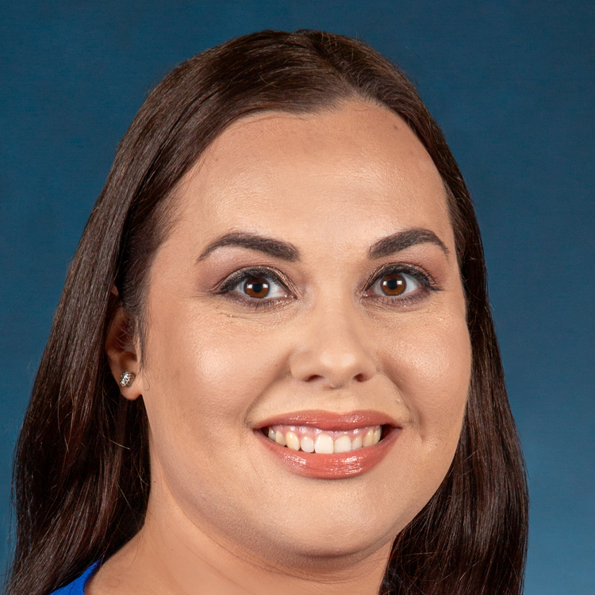
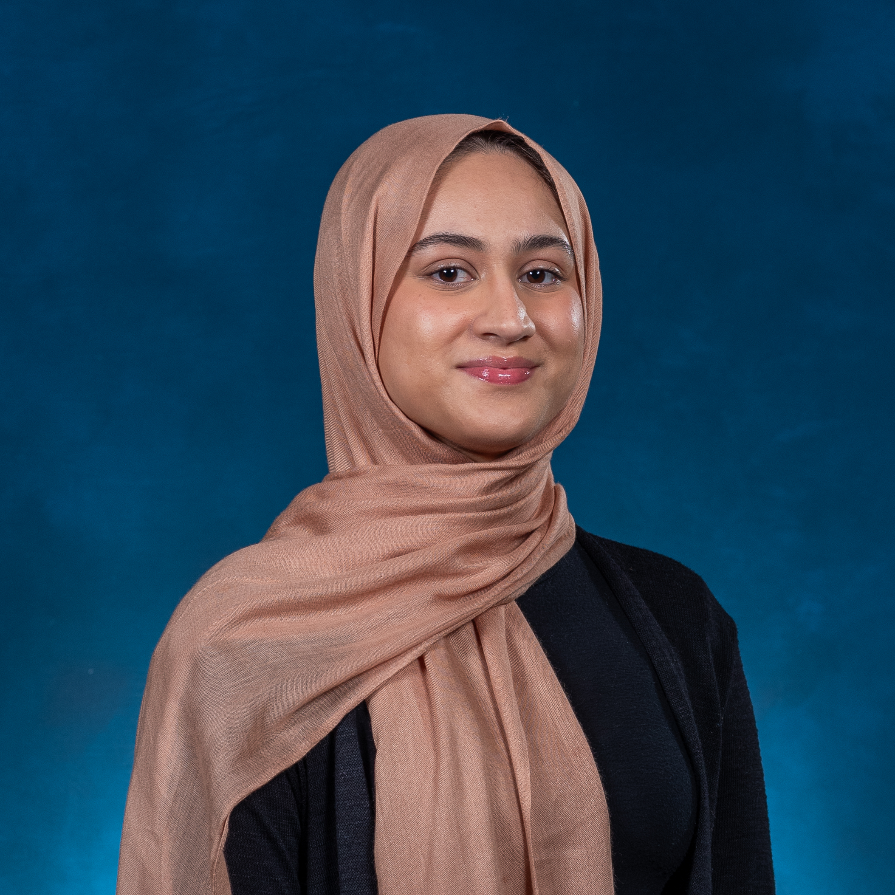
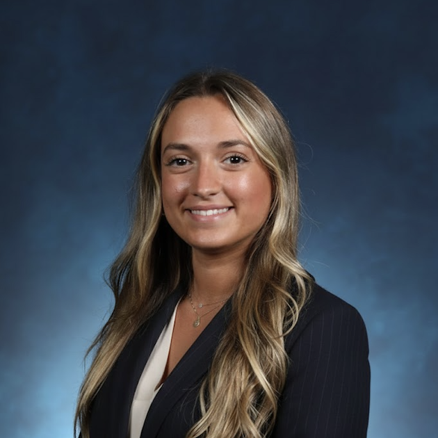

The American Physician Scientists Association (APSA) Mid-Atlantic Regional Meeting will take place on Saturday, September 26th, 2026, at Rowan-Virtua School of Osteopathic Medicine in Stratford, New Jersey. This meeting provides opportunities for networking and mentorship among students from different institutions and training levels, as well as engagement with established physician-scientists. The program will feature discussions on basic science and clinical research, pioneering new treatments, and translating basic scientific advances from bench to bedside. Attendees will have the opportunity to present and learn about cutting-edge research across a wide range of biomedical fields, including immunology, biochemistry, drug development, and neuroscience. This meeting includes a poster session, multiple oral presentations, focused breakout discussions led by highly esteemed leaders in their fields, a Rowan-Virtua SOM DO/PhD alumni panel discussion, and a keynote presentation by Dr. Eric Goldwaser, DO, PhD, a distinguished Psychiatrist from Weill Cornell and Rowan-Virtua SOM alumnus.

Attendance at this meeting is open to trainees of all levels interested in and pursuing a career as a physician-scientist. We welcome undergraduate, graduate, and medical students as well as resident physicians, fellows, early career investigators, and medical professionals who conduct biomedical research. Geographically, this event will serve trainees and physician scientists from the Mid-Atlantic United States, including New Jersey, Pennsylvania, Delaware, Maryland, Washington DC, Virginia, and West Virginia, but will also be open to students from the NYC area, the northeast, and other regions of the US.
Registration Information: Registration is free. The deadline to register is September 10, 2026 at 11:59 PM EST.
Abstract Guidelines:Please pay close attention to the character limits for each field as described below. Any text beyond the character limits is not guaranteed to appear in the program. The maximum number of allowable characters with spaces for each field is as follows:
Title: 200 characters w/ spaces
Affiliations: unlimited
Abstract: 300-word limit
Poster Guidelines: Posters will be split into three categories for judging: high school/undergraduate, medical student/graduate student, and postdoc/fellow. Prizes will be awarded to 1st place presenters in each category. Poster presentations should last approximately 5-10 minutes. Judges will identify themselves as such to the presenter of their assigned posters.
Oral Presentation Guidelines: The online submission form will contain a field where you can indicate whether you would like to have your abstract considered for an oral platform presentation. Each platform presentation will be 10 minutes in length, with an additional 3 minutes for questions from the audience. Prizes will be awarded to the 1st-place oral presentation presenters. If your abstract is selected for oral presentation, you may also elect to present your data as a poster, but you will not be entered into the poster competition. In the online submission form, please indicate your preference for presenting a poster if you are selected for oral presentation.
Travel awards are available to support trainees and early-career investigators who would benefit from financial assistance to participate in this event. Awards are intended to help offset costs associated with attending the meeting, including transportation and lodging. Applicants will be selected based on their motivation to attend, the anticipated impact of the meeting on their professional development, and demonstrated need for travel support. Application deadline is July 31, 2026 at 11:59 PM EST. Decisions will be released by Aug 14th, 2026. Deadline to accept the travel award and register is September 10, 2026.
The conference will take place at: Rowan-Virtua School of Osteopathic Medicine, Academic Center, 42 East Laurel Road, Stratford, NJ 08084
From the North: Take the New Jersey Turnpike to Exit 4 to Route 73 North to Route 295 South. Follow Route 295 South to Exit 29. Turn left onto access road to Route 30. At light turn left onto Route 30 East (White Horse Pike). Follow directions from Route 30 below.
From the South: Follow Route 295 North to Exit 29A to Route 30. Follow directions from Route 30 below.
From route 30: Follow Route 30 East (and the blue hospital signs) for 3.3 miles to the traffic light at Laurel Road. Turn right onto Laurel Road. Take first left into the School of Osteopathic Medicine Complex and continue straight into Lot A for patient/visitor parking.
Public Transportation:The Stratford campus is easily accessible through various modes of transportation: plane, bus, train, and regional rail. The PATCO Speedline and the Atlantic City Rail Line serve the Stratford campus through the Lindenwold Station. The station is approximately a half mile, less than a 10-minute walk, from our campus. For those taking the train, a shuttle will be provided to bring attendees to and from the NJ Transit Lindenwold train station from 8:00am-10:00am and from 5:00pm to 7:00pm.
Air Travel:Philadelphia International Airport is our closest airport. The drive is about 30 minutes from Stratford. There are various options to get you from the airport to campus including rental car, SEPTA and NJ Transit Regional Rail, and Bus.
Hotel Accomodations: We recommend SpringHill Suites by Marriott - Voorhees, NJ. There is no room block. Those who require a room can directly book through the Marriott website.
Rowan-Virtua School of Osteopathic Medicine facilities are ADA-compliant. Visitors requiring accessibility accommodations are encouraged to email apsarowansom@gmail.com in advance.
| Time | Session | Features & Speakers |
|---|---|---|
| 8:00am-9:00am | Registration, Continental Breakfast, Poster Set-Up | Shuttle service begins (to/from Lindenwold PATCO station to Stratford Campus), 2hr loop |
| 9:00am-9:30am | Welcome Address | Rowan-Virtua SOM’s Dean Langford and APSA National Member Eleni Papadopoulos |
| 9:30am-10:30am | Student talks (4 students, 10min talk + 5min Q&A each) | |
| 10:30am-10:45am | Coffee Break | |
| 10:45am-11:45am | Keynote Address + Audience Q&A | Dr. Eric Goldwaser, DO/PhD |
| 11:45am-1:00pm | Gourmet Networking Lunch | |
| 1:00pm-1:45pm | Breakout Sessions |
Track A (Auditorium): “OPEN Conversation” with Dr. Brian Schutte, PhD, of MSUCOM & co-founder and leader of the Osteopathic Physician-Scientists Engagement Network (OPEN) Track B (Second Floor): Presentation by Dr. Skip Brass, MD/PhD, Director of the UPenn MSTP program Track C (Third Floor): Chat with Rowan-Virtua SOM Admissions |
| 1:45pm-2:00pm | Coffee Break | |
| 2:00pm-3:30pm | Poster Session | |
| 3:30pm-4:30pm | Rowan-Virtua Alumni Panel "Legacy and Leadership" | |
| 4:30pm-5:00pm | Presentation Awards and Closing Remarks | Rowan-Virtua SOM’s Dean Jermyn |
| 5:00pm-7:00pm | Gourmet Reception & Networking Event | Shuttle service begins (to/from Stratford Campus to Lindenwold PATCO) 2hr loop |

Assistant Professor of Psychiatry
Weill Cornell Medicine
Keynote Speaker

Associate Professor, Department of Microbiology and Molecular Genetics
Michigan State University College of Osteopathic Medicine (MSUCOM)
Professor of Medicine and Pharmacology; Director of the Medical Scientist Training Program (MSTP)
Perelman School of Medicine, University of Pennsylvania

Associate Professor of Physical Medicine and Rehabilitation
Perelman School of Medicine, University of Pennsylvania

Professor and Associate Program Director for the PM&R Residency Program, Director of Brain Injury and Stroke Rehabilitation
Rowan-Virtua SOM

General Surgery Resident
ChristianaCare Health System

Pathology Resident
Cooper Medical School of Rowan University

DO/PhD Student
Rowan-Virtua SOM

Pizutelli Vanessa
APSA Local Chapter Co-President

Taylor Good
APSA Local Chapter Co-President

Iman Hasan
APSA Local Chapter Vice-President
Ashish Kokkula
APSA Local Chapter Treasurer
Dhruvkumar Sitapara
APSA Local Chapter Secretary

Eleni Papadopolous
APSA Local Chapter Osteopathic Student Liaison